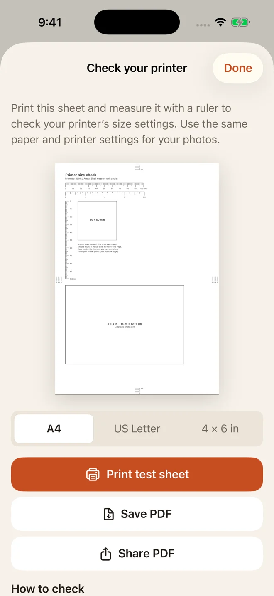

Check your printer before the good paper.
By Mohamed Elatabany · Updated 5 October 2026
Print a free test sheet on matching paper at 100% / Actual size, then measure the rulers and square. If they are smaller or larger than their labels, your print settings changed the scale.
Choose your paper
These one-page PDFs come directly from Photo Print’s printer-check feature. Download the original PDF; printing a screenshot changes its size.
Print one sheet
- Load the paper that matches the PDF and select that paper size in your print dialog.
- Choose Actual size or 100% where available. Turn off Fit to page, Scale to fit, and multiple pages per sheet.
- Print one copy. Use the same paper type and settings you plan to use for your photos.
In Acrobat, Actual size prints without scaling; content outside the printable area can be clipped. See Adobe’s page-size instructions. AirPrint options depend on the printer. If its dialog does not offer the settings you need, print the PDF from a computer or the printer’s software.
Measure the result
| Paper | Rulers | Square |
|---|---|---|
| A4 | 100 mm and 4 in | 50 × 50 mm |
| US Letter | 100 mm and 4 in | 2 × 2 in (50.8 mm) |
| 4 × 6 in | 70 mm and 3 in | 2 × 2 in (50.8 mm) |
Measure from the zero mark to the final mark, and check both sides of the square. The A4 and Letter sheets also include a 6 × 4 inch photo outline (152.4 × 101.6 mm).
If a 100 mm ruler measures 96 mm, the output is at roughly 96% scale. Check scaling, selected paper and borderless expansion before changing your photo layout. A ruler check helps diagnose printing; it cannot guarantee identity-document acceptance.
Check your print scale
Enter the ruler’s labelled length and the length you measured on paper. Use the same unit for both numbers (mm, cm or inches). Check the horizontal and vertical rulers separately.
Calculated on your device; no measurements are sent or stored. This estimates one measured length, not printer accuracy or an official acceptance tolerance. Fix the print settings and repeat the test before printing photos.
Check the edges
The marks sit 2, 4, 6 and 8 mm from each edge. The first complete mark you can see gives a practical indication of the printable edge for those settings. Check all four sides and keep photo layouts inside the visible marks, allowing extra clearance if needed. Repeat when you change paper or printer settings.
Use it inside Photo Print
Coming in 1.4.1
The in-app printer check is awaiting Apple review. Once 1.4.1 is available, open Settings → Check your printer’s size, or choose Print a test sheet first from the output screen. Select your paper, then print, save or share the PDF. Test sheets are always free and do not use your included photo output.
The downloads above are available now, without installing the app.

More printing help
- Fix photos that print at the wrong size
- Troubleshoot AirPrint, margins and paper
- Print photo PDFs at actual size
Written by Mohamed Elatabany, developer of Photo Print. App instructions are based on Photo Print; printer behaviour varies. Send a correction or ask for help.